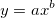

最終更新日:2015/02/04
フィットデータを変換し、変換したフィット関数を使うとき、時折、両方のフィットデータが良いように見えるにもかかわらず、フィットパラメータが異なることに気づくかもしれません。
例えば、フィット関数 y=a/(x-b)で、y を 1/yのように変更すると、フィット関数は線形 v=c*x-d になります。
ここで v=1/y, a=1/c , b=d/c です。
2つのフィット結果から計算されるaとbは異なっているかもしれません。これは、2つのモデルでポイントに対する残差平方和(RSS)への寄与が異なるためです。関数 y=a/(x-b)に対して、y は小さいxでは大きく、大きいxでは小さくなるので、小さいxでのポイントは RSSへの寄与が大きく、逆に大きいxでのポイントは RSSへの寄与が小さくなります。関数 v=c*x-dに対して、v は大きいxでは大きく、小さいxでは小さくなり、RSSへの寄与は逆になります。
これは、他の変換に対しても起こるかもしれません。例えば y=a*exp(-b*x) は、 log(y)=log(a)-log(e)*b*xに変換されますが、

は log(y)=log(a)+b*log(x) に変換されます。キーワード:フィット, 変換, 寄与, RSS